Abstract
In this paper, we tackle the problem of learning to play 3v3 multi-drone volleyball, a new embodied competitive task that requires both high-level strategic coordination and low-level agile control. The task is turn-based, multi-agent, and physically grounded, posing significant challenges due to its long-horizon dependencies, tight inter-agent coupling, and the underactuated dynamics of quadrotors.
To address this, we propose Hierarchical Co-Self-Play (HCSP), a hierarchical reinforcement learning framework that separates centralized high-level strategic decision-making from decentralized low-level motion control. We design a three-stage population-based training pipeline to enable both strategy and skill to emerge from scratch without expert demonstrations: (I) training diverse low-level skills, (II) learning high-level strategy via self-play with fixed low-level skills, and (III) joint fine-tuning through co-self-play.
Experiments show that HCSP achieves superior performance, outperforming non-hierarchical self-play and rule-based hierarchical baselines with an average 82.9% win rate and a 71.5% win rate against the two-stage variant. Moreover, co-self-play leads to emergent team behaviors such as role switching and coordinated formations, demonstrating the effectiveness of our hierarchical design and training scheme.
Framework Overview
3v3 Multi-Drone Volleyball Task
Our work aims to tackle the 3v3 Multi-Drone Volleyball Task proposed in VolleyBots played on a 12m × 6m court with a 2.43m net. Each team controls three quadrotors and must cooperate to return the ball to the opponent's court while following standard volleyball turn-based rules. The task simultaneously demands precise motion control for individual drones and coordinated team strategy for multi-agent decision-making—making it a uniquely challenging benchmark for embodied multi-agent reinforcement learning.
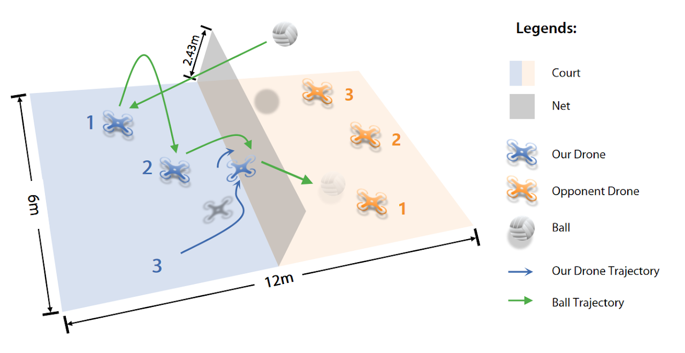
Figure 1. The VolleyBots 3v3 competitive task. Three quadrotors per team compete on a 12m × 6m court with a 2.43m net. Green arrows indicate ball trajectories; blue arrows indicate drone trajectories.
Hierarchical Co-Self-Play (HCSP) Architecture
HCSP separates decision-making into two levels: a centralized high-level strategy that determines which skill each drone should execute, and a decentralized low-level skill pool that executes the assigned motion primitives. The high-level strategy is triggered by game events (e.g., ball contact) and selects from a pool of pre-trained low-level skills, providing tactical observations as guidance. This hierarchical structure allows the system to jointly optimize both strategic planning and agile flight control.
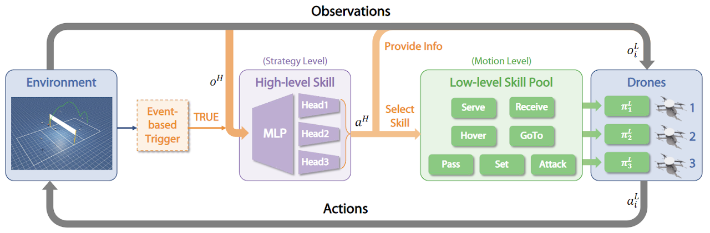
Figure 2. The HCSP architecture. An event-based trigger activates the high-level strategy (MLP with multi-head output) which selects skills from the low-level skill pool for each drone. Low-level skills (Serve, Receive, Hover, GoTo, Pass, Set, Attack) execute the assigned primitives and send actions to the drones.
Three-Stage Training Pipeline
HCSP learns entirely from self-play without any expert demonstrations. The training unfolds across three carefully designed stages, each building upon the previous to produce increasingly sophisticated team behaviors.
Stage I: Low-Level Skill Acquisition
Train a diverse pool of low-level motion primitives using policy chaining, enabling smooth transitions between temporally adjacent skills.
Stage II: High-Level Strategy Pretraining
Fix the low-level skill pool and learn high-level team strategy through population-based self-play, acquiring initial cooperative and competitive tactics.
Stage III: Co-Self-Play
Jointly fine-tune both high-level strategy and low-level skills through co-self-play, enabling mutual improvement and emergent team behaviors.
Stage I: Low-Level Skill Acquisition
We train seven low-level skills using policy chaining, where a new skill policy is initialized from a relevant predecessor skill to facilitate smooth behavioral transitions. Each skill focuses on controlling individual drones to execute specific motion primitives without tactical reasoning. The table below describes each skill and the tactical observations provided by the high-level strategy.
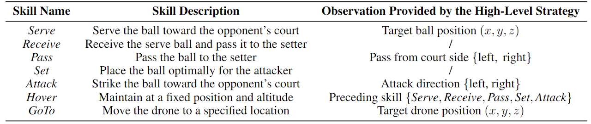
Table 1. Description of seven low-level skills acquired in Stage I and the corresponding tactical observations provided by the high-level strategy.
Policy chaining significantly improves sample efficiency compared to training skills from scratch (single-policy). As shown below, policy chaining achieves faster convergence and higher asymptotic reward in representative skills.
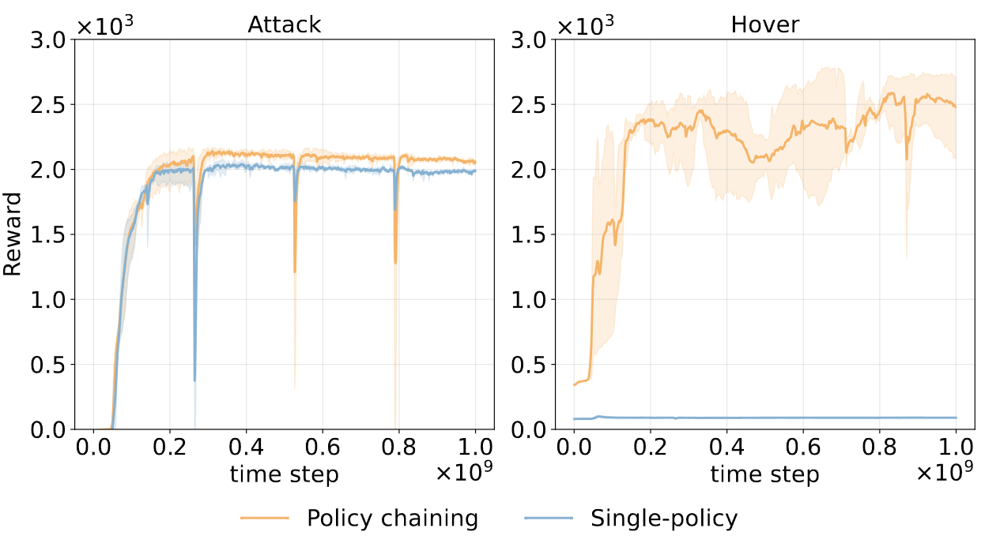
Figure 3. Training curves for the Attack and Hover skills. Policy chaining (orange) converges faster and achieves higher rewards than the single-policy baseline (blue).
Stage II: High-Level Strategy Pretraining
With the low-level skill pool frozen, we pretrain the high-level strategy through population-based team-level self-play. Each team is modeled as a centralized high-level agent selecting skills for all three drones. We maintain a population of strategy policies and use Nash Equilibrium (NE)-based sampling to construct diverse matchups, enabling the strategy to acquire robust cooperative and competitive tactics.
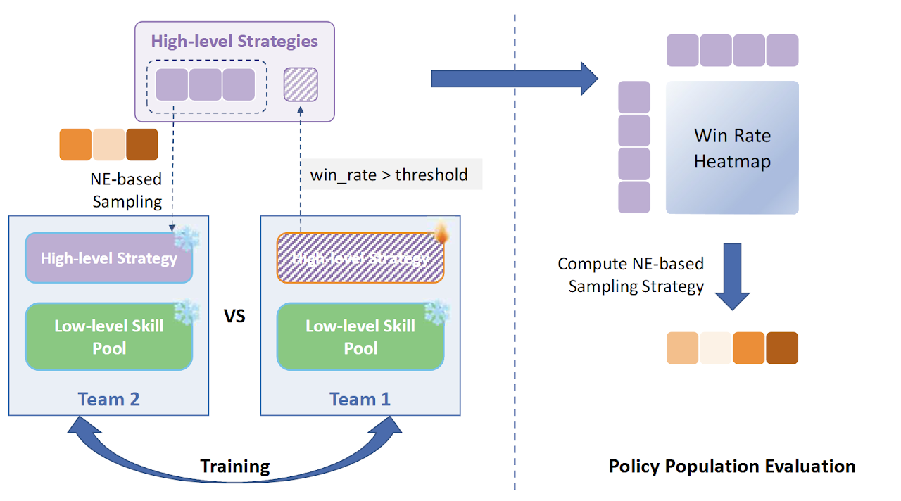
Figure 4. Population-based training framework. Teams are sampled via NE-based strategies, and a win rate heatmap is computed for policy population evaluation.
Since the high-level strategy is event-driven, its action steps are temporally sparse. To address the training inefficiency caused by sparse event-driven transitions, we apply sample reallocation: transitions are collected across multiple environments but only event-driven timesteps are extracted and batched for training, significantly improving data efficiency.
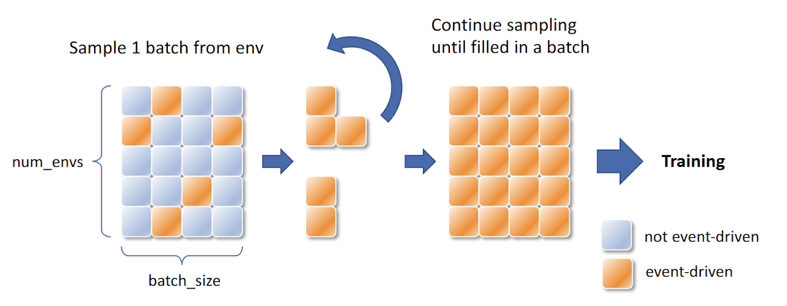
Figure 5. Sample reallocation for high-level strategy training. Event-driven transitions (orange) are collected across environments and repackaged into full training batches.
Stage III: Co-Self-Play
In Stage III, we co-optimize both the high-level strategy and low-level skills through co-self-play. New low-level skill policies are introduced into the skill pool and jointly trained with the high-level strategy. High-level strategies can motivate low-level skill development, and improvements in low-level skills in turn inform better high-level decision-making—creating a virtuous cycle of mutual improvement that leads to emergent team behaviors.
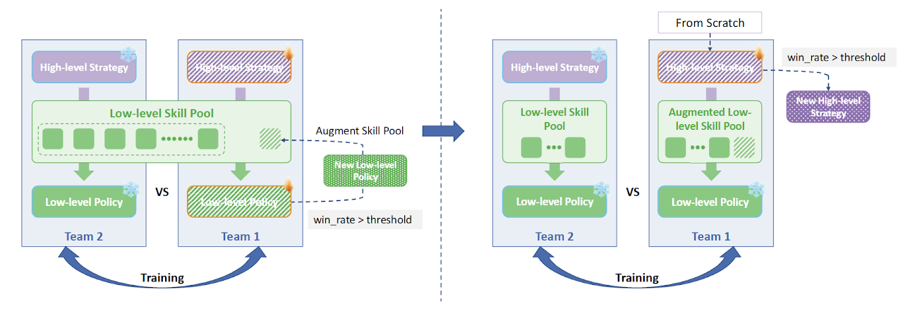
Figure 6. Illustration of the co-self-play stage (Stage III). New low-level policies are introduced to augment the skill pool, while a new high-level strategy is trained from scratch alongside the evolving skill pool.
Experiments
Game Results Against Baselines
We evaluate HCSP against five baselines: Self-Play (SP), Fictitious Self-Play (FSP), PSROUniform, PSRONash, and a rule-based Bot. HCSP achieves an average win rate of 82.9%, outperforming all baselines across all matchup types.
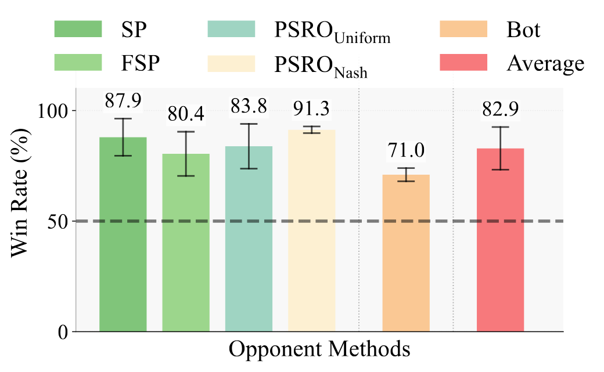
Figure 7. HCSP win rate against each baseline and the average win rate. The dashed line indicates the 50% (random) threshold.
Quantitative Analysis of Stage III Co-Self-Play
To evaluate the effectiveness of Stage III, we conduct head-to-head tournaments between Stage II and Stage III policies. The Stage III policy achieves a 71.5% win rate over the Stage II policy, demonstrating clear improvement from co-self-play. To assess absolute robustness, we also use a Nash-averaging evaluator: the Stage III policy improves its Nash-averaged win rate from 31.4% (Stage II) to 47.6%, a 16.2% absolute gain.
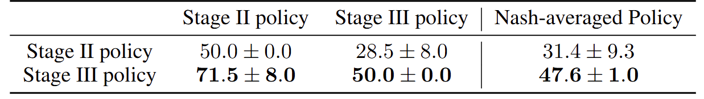
Table 2. Head-to-head and Nash-averaged win rates of Stage II and Stage III policies (mean ± std).
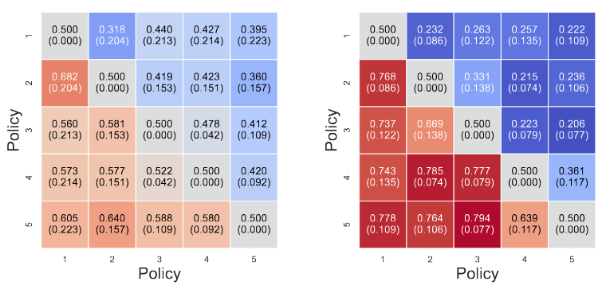
Figure 8. Win rate matrices for Stage II policies (left) and Stage III policies (right), showing consistent improvement in Stage III.
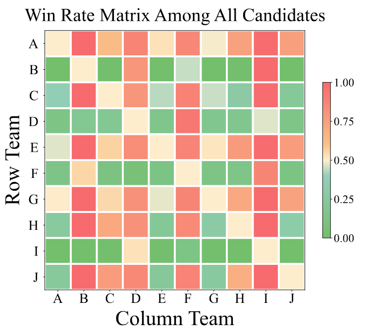
Figure 9. Win rate matrix among all candidate policies (A–J) from the full tournament, visualized as a heatmap.
Emergent Low-Level Skills
Beyond quantitative gains, Stage III co-self-play leads to qualitatively richer behaviors. Low-level skills evolve to execute more complex and coordinated motion primitives, such as front-flip hits and dynamic role switching, which were not present in the Stage II policy. The figure below shows simulation frames of representative emergent behaviors discovered through co-self-play.
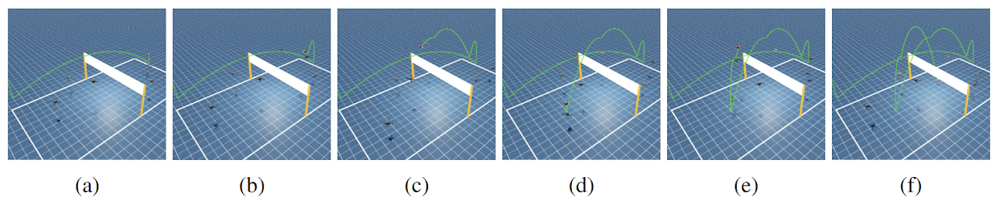
Figure 10. Simulation frames (a)–(f) showing representative emergent low-level behaviors discovered through co-self-play, including dynamic positional adjustments and complex attack trajectories.
Videos
The following videos demonstrate HCSP in action, including a spotlight overview, real-world deployment, and individual low-level skill demonstrations. Click any thumbnail to watch on YouTube.
Spotlight

HCSP — Spotlight Demo
Real-World Demonstrations

Real-world: Solo Bump

Real-world: Serve
Simulation Skill Demonstrations

Serve

Receive

Set

Pass

Attack

Front Flip Hit
BibTeX
If you find our work useful, please cite our paper:
@inproceedings{zhang2025mastering,
title={Mastering Multi-Drone Volleyball through Hierarchical Co-Self-Play Reinforcement Learning},
author={Zhang, Ruize and Xiang, Sirui and Xu, Zelai and Gao, Feng and Ji, Shilong
and Tang, Wenhao and Ding, Wenbo and Yu, Chao and Wang, Yu},
booktitle={Proceedings of the Conference on Robot Learning (CoRL)},
year={2025}
}